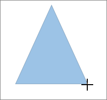

You can add shapes, such as boxes, circles, and arrows, to your documents, email messages, slide shows, and spreadsheets. To add a shape, click Insert, click Shapes, select a shape, and then click and drag to draw the shape.
After you add one or more shapes, you can add text, bullets, and numbering to them, and you can change their fill, outline, and other effects on the Format tab.
On the Insert tab, click Shapes.
Click the shape you want, click anywhere in the workspace, and then drag to place the shape.
To create a perfect square or circle (or constrain the dimensions of other shapes), press and hold Shift while you drag.